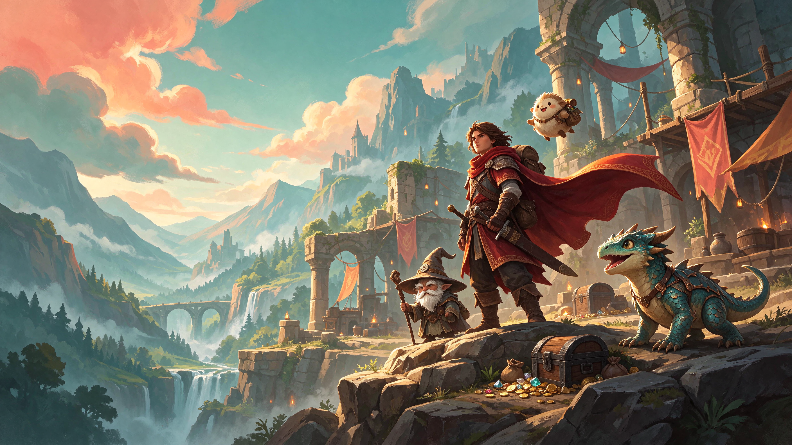

Small grid, big decisions
1v1 to 6v6 turn-based battles, field attacks, encounter advantage, Link Attacks, Break and status effects that matter.
A 2.5D grid battle game with a cozy heart: visible encounters, dramatic forms, a homestead to improve, and a transport budget that gets out of hand.
1v1 to 6v6 turn-based battles, field attacks, encounter advantage, Link Attacks, Break and status effects that matter.
Build stats, passives and Arts through the Lattice. Swap a Core Shard to change a Bondkin's affinity.
Gale, Aegis, Zephyr, Tempest and Zenith Forms unlock distinct movement and action skills.
Gather, craft, expand storage, unlock workshops and build a home that makes the next expedition smarter.
Run guild missions, build clan turf, deploy for days at a time and come back to rewards instead of emails.
Sky Skiff, boat, bike, skateboard, wagon and more. Traversal is for getting there, not becoming a space opera.

Start with the Codex, choose a calling, then bring your best weird little team into the wilds.
Return to the campfire